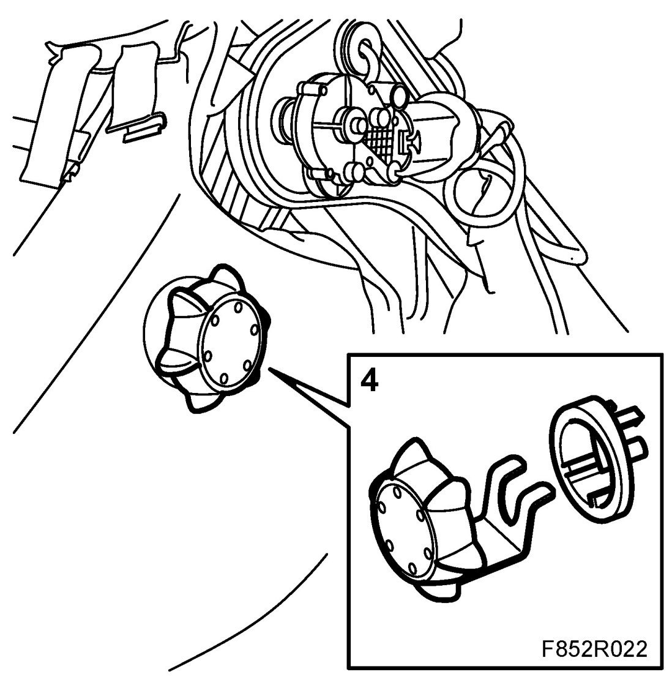
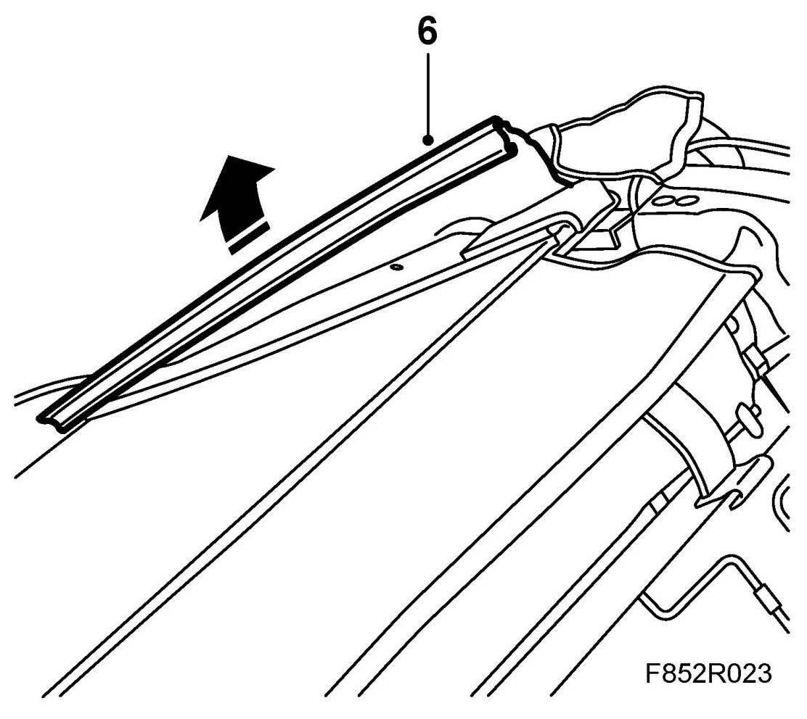
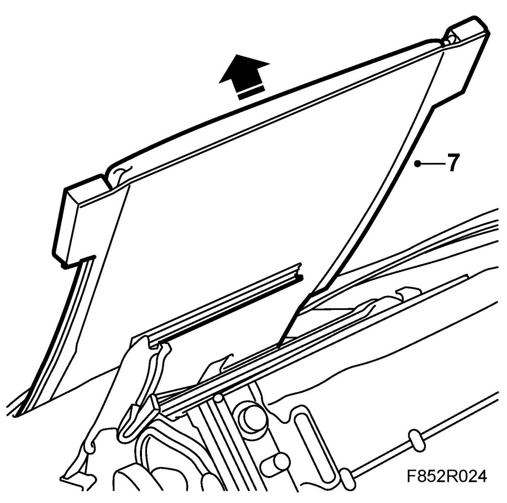
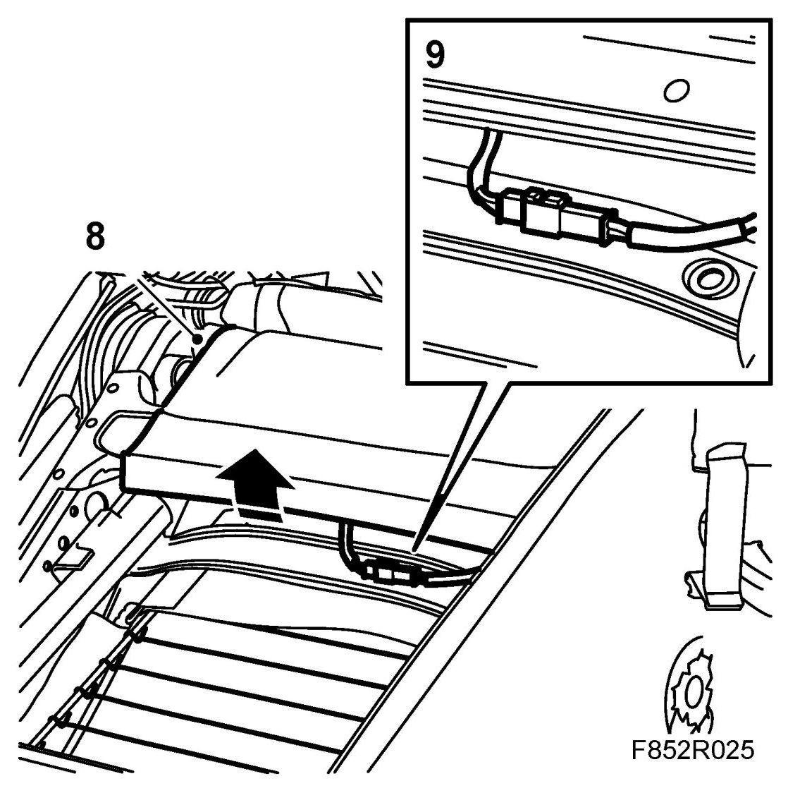
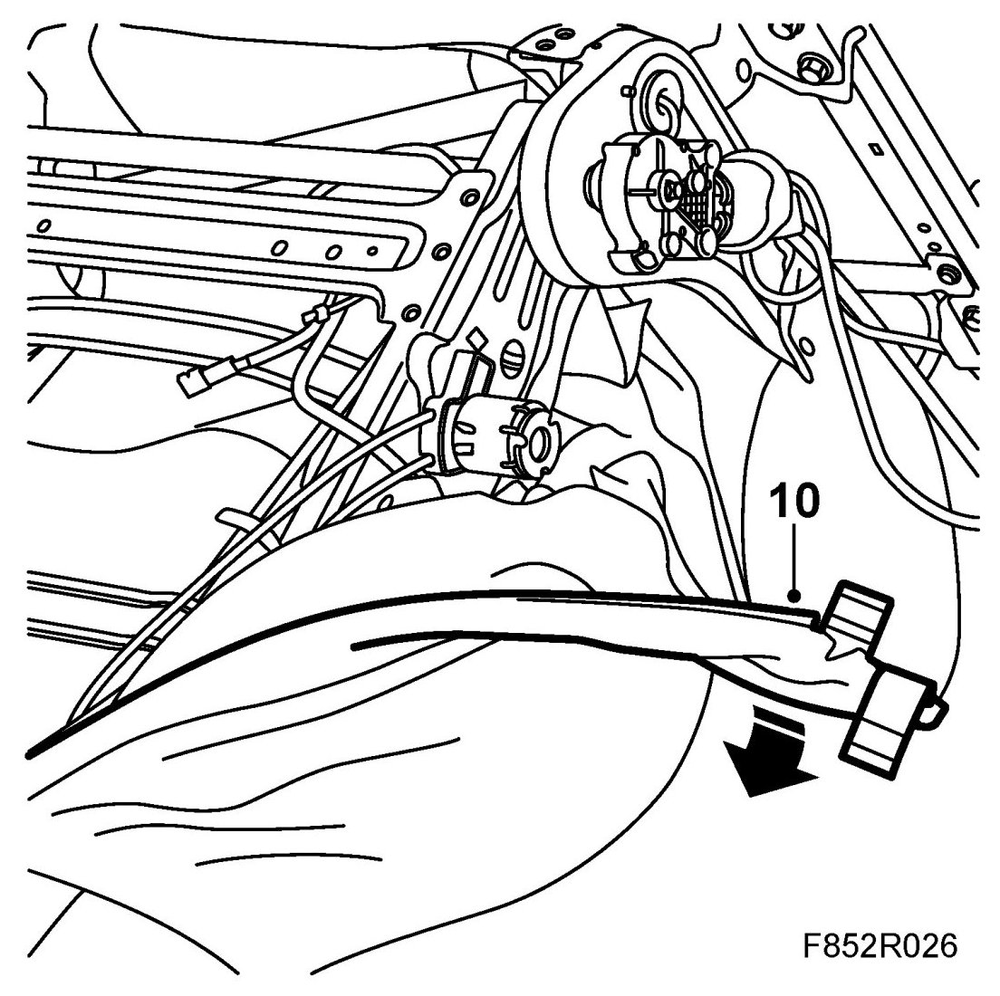
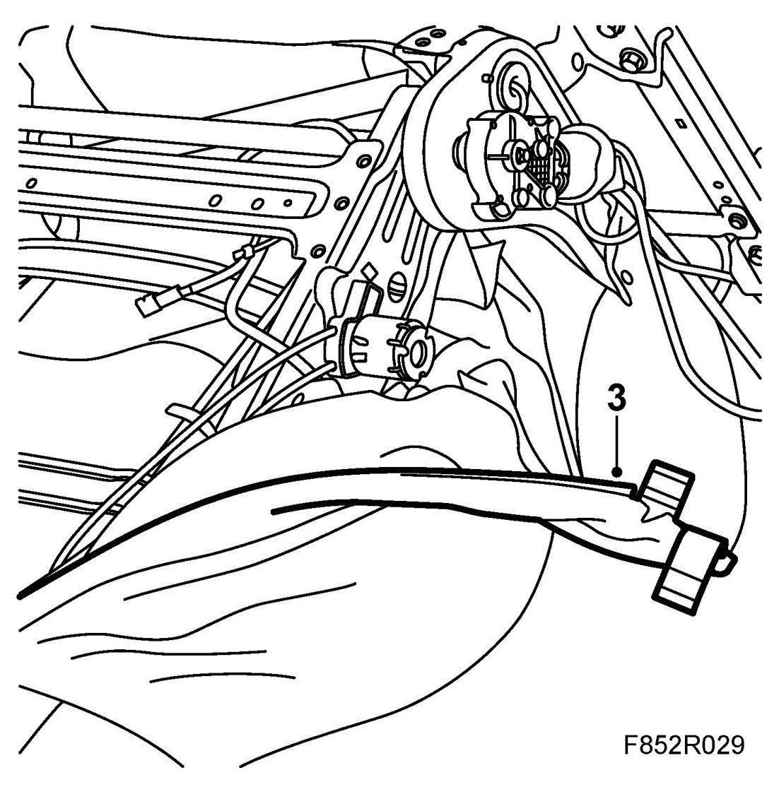
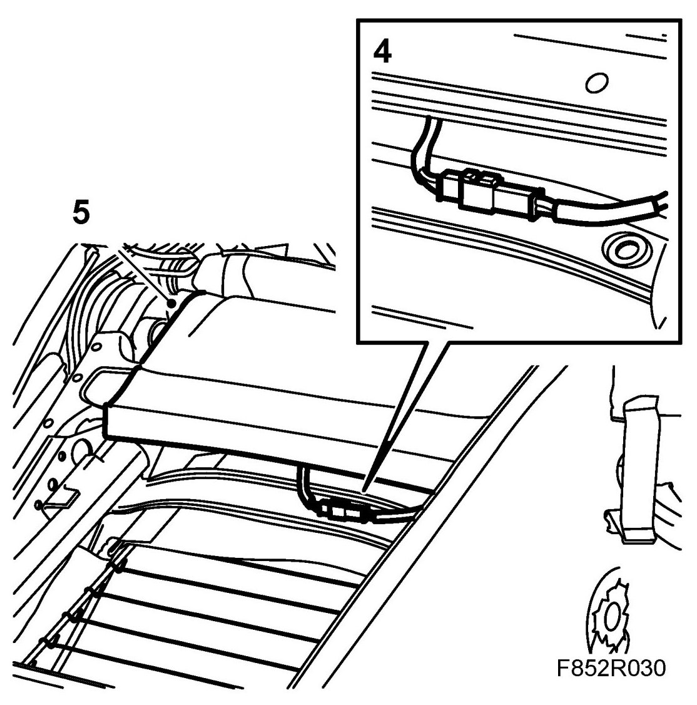
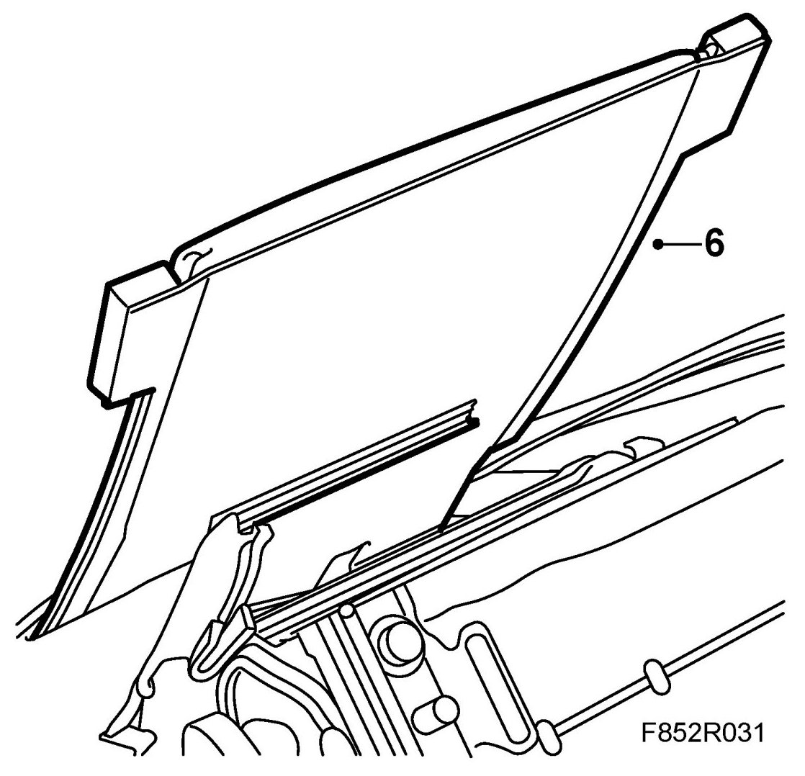
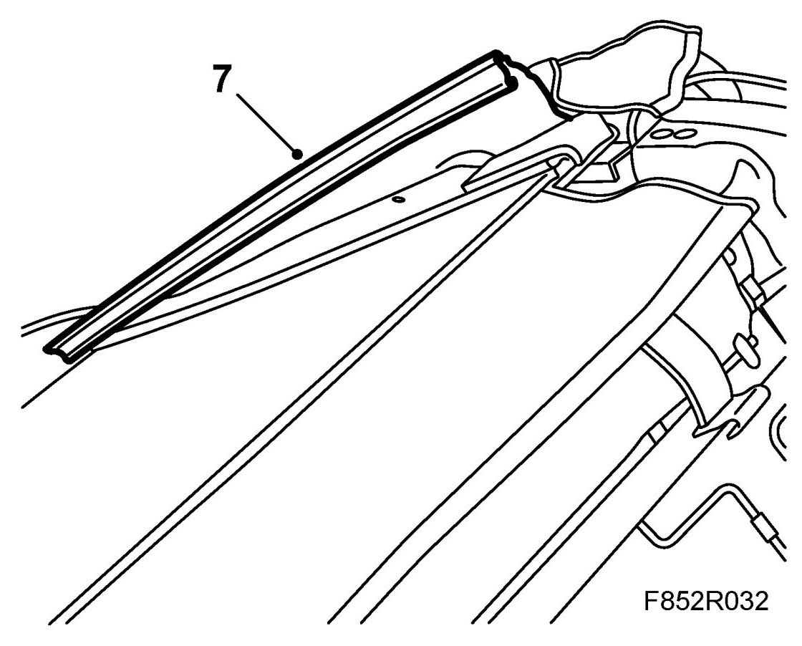
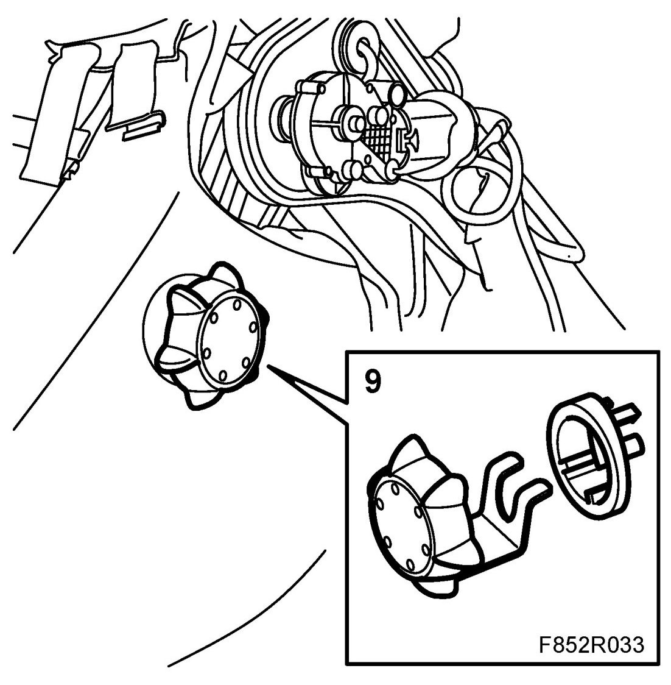

Backrest Upholstery, Front Seat
Backrest Upholstery, Front Seat
WARNING:
- All cars are equipped with an airbag system that has side airbags as a component. The side airbag is fitted under the backrest upholstery on each front seat.
- Work in accordance with the Safety and handling regulations.
- Torn backrest upholstery must not be repaired and refitted. The resistance of the upholstery is very carefully calculated as regards the side airbag and must not be changed.
Removing
1. Remove the seat.
2. Remove the head restraint.
3. Remove the head restraint guides by opening up the catch inside each guide with a screwdriver at the same time as pulling the guide up.
4. Remove the lumbar support wheel.

5. Lie the seat down with the underside easily accessible.
6. Release the upholstery strip along the edges of the back of the backrest frame.

7. Remove the back of the backrest by pressing the back plate towards the top of the backrest at the same time as guiding the plate out from the backrest.

8. Unhook the lower edge of the backrest upholstery.

9. Unplug the backrest heating pad.
10. Loosen the lower edge and sides of the foam in the backrest.

11. Stand the seat upright.
12. Lift off the upholstery.
Fitting
1. Guide the upholstery over the backrest frame. Make sure that the foam is correctly positioned over the side airbag.
2. Lie the seat down with the underside easily accessible.
3. Fit the lower edge and sides of the backrest foam.

4. Plug in the backrest heating pad.

5. Fit the lower edge of the backrest upholstery.
6. Fit the back of the backrest.

7. Fit the upholstery strips along the edges of the back of the backrest frame.

8. Stand the seat upright.
9. Fit the lumbar support wheel.

10. Fit the guides for the head restraint. Make sure that the catch inside the guide engages correctly.
11. Fit the head restraint.
12. Fit the seat.